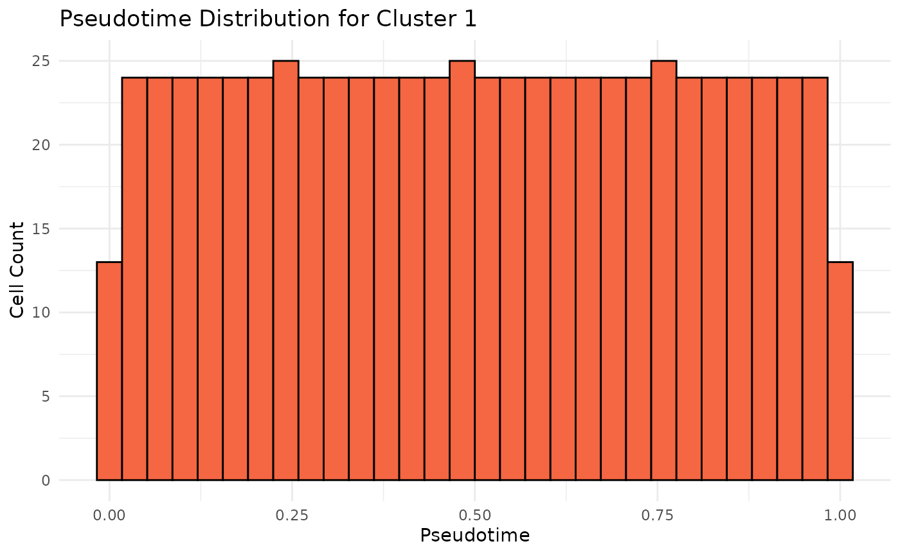
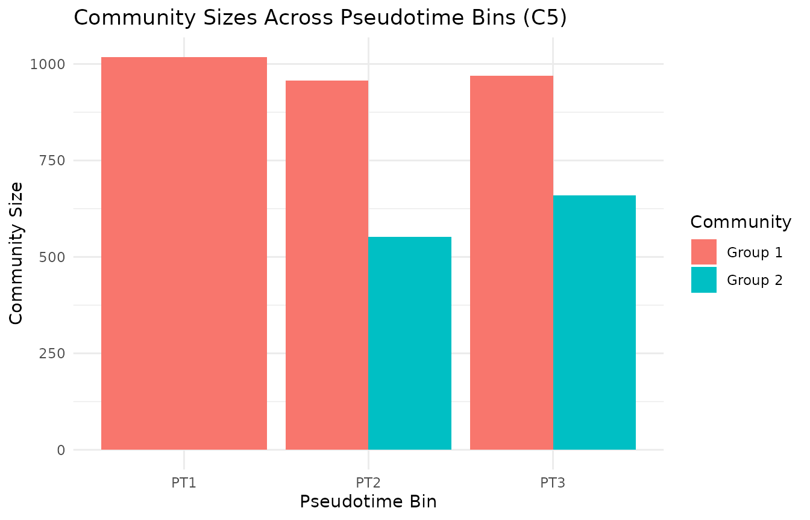
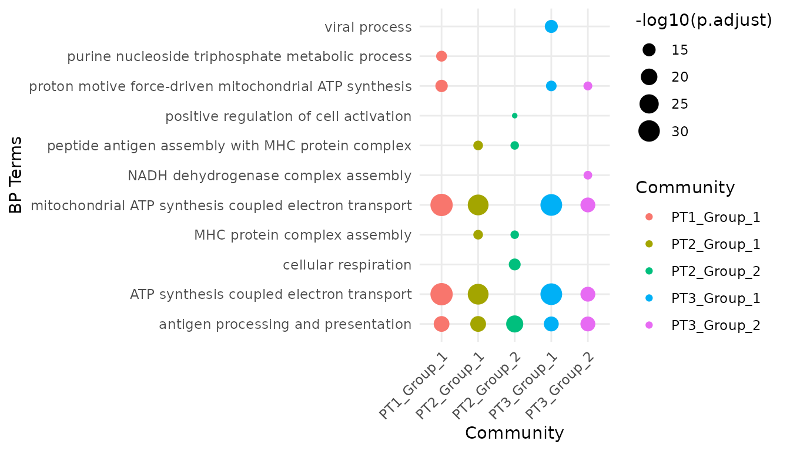
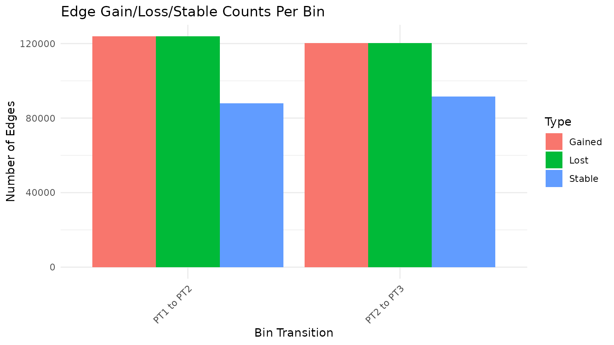
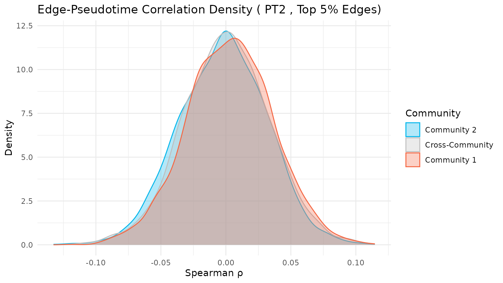

Pseudotime-Aware MI Network Analysis with miEdgeR
pseudotime_mi_network.RmdAbout this vignette
This tutorial demonstrates how to incorporate pseudotime information into mutual-information (MI) network analysis using miEdgeR. We bin cells along a trajectory, build MI networks per bin, detect communities, and track dynamic changes in modules, hub genes, and enrichment across pseudotime.
Prerequisites:
R (≥ 4.2.0)
Seurat object containing cluster metadata (RNA_snn_res.0.2) and a numeric pseudotime column
Packages: miEdgeR, Seurat, igraph, clusterProfiler, org.Hs.eg.db, ggplot2, ggraph, flextable, pheatmap
Introduction
We extend the MI-network workflow by leveraging single-cell pseudotime. After generating a pseudotime vector, we bin cells into discrete stages, compute MI networks in each bin, and then analyze how community structure, hub genes, and functional enrichment evolve along the trajectory.
Load Libraries and Data
Load all dependencies and read the preprocessed Seurat object. Ensure your object includes clustering and pseudotime metadata.
Generate or Verify Pseudotime
Here we generate a mock pseudotime for cluster 1 and plot its distribution.
set.seed(123)
cluster_1_cells <- colnames(seurat_obj)[seurat_obj@meta.data$RNA_snn_res.0.1 == "1"]
mock_pseudotime <- numeric(ncol(seurat_obj))
names(mock_pseudotime) <- colnames(seurat_obj)
mock_pseudotime[cluster_1_cells] <- seq(0, 1, length.out = length(cluster_1_cells))
other_cells <- setdiff(colnames(seurat_obj), cluster_1_cells)
mock_pseudotime[other_cells] <- runif(length(other_cells), 0, 1)
seurat_obj@meta.data$pseudotime <- mock_pseudotime[match(rownames(seurat_obj@meta.data), names(mock_pseudotime))]
p_pt <- ggplot(data.frame(pseudotime = seurat_obj@meta.data[cluster_1_cells, "pseudotime"]), aes(x = pseudotime)) +
geom_histogram(bins = 30, fill = "#f56642", color = "black") +
labs(title = "Pseudotime Distribution for Cluster 1", x = "Pseudotime", y = "Cell Count") +
theme_minimal()
print(p_pt)
Compute Pseudotime MI Networks
For each pseudotime bin (3 bins), we extract cells, filter top variable genes, compute MI in parallel, and build thresholded igraph objects.
pt_results <- miEdgeR::compute_pseudotime_mi_network(
seurat_obj,
cluster_id = "1",
cluster_field = "RNA_snn_res.0.1",
pseudotime_col = "pseudotime",
assay_name = "RNA",
counts_layer = "counts",
data_layer = "data",
min_expr_pct = 0.05,
top_n_genes = 3000,
min_cells_bin = 50,
n_bins = 3, ## set the number of pseudotime bins
n_cores = 65
)## Using adaptive nbins = 5
## Using adaptive nbins = 5
## Using adaptive nbins = 5## Valid bins: 3Summarize Bin Graphs
Quick summary of node and edge counts and density per bin to assess network complexity over pseudotime.
for (bin in names(pt_results)) {
if (!is.null(pt_results[[bin]])) {
cat("Bin", bin, "- Vertices:", igraph::vcount(pt_results[[bin]]), "\n")
cat("Bin", bin, "- Edges:", igraph::ecount(pt_results[[bin]]), "\n")
cat("Bin", bin, "- Density:", igraph::graph.density(pt_results[[bin]]), "\n")
} else {
cat("Bin", bin, "- Skipped (insufficient cells)\n")
}
}## Bin PT1 - Vertices: 2911
## Bin PT1 - Edges: 211806
## Bin PT1 - Density: 0.05000726
## Bin PT2 - Vertices: 2911
## Bin PT2 - Edges: 211825
## Bin PT2 - Density: 0.05001175
## Bin PT3 - Vertices: 2911
## Bin PT3 - Edges: 211818
## Bin PT3 - Density: 0.05001009All bins yielded valid networks with consistent structure (2911 genes, ~211K edges, density ≈ 0.05), indicating stable co-regulatory patterns across pseudotime stages in Cluster 1.
Community Detection
Detect robust gene modules per bin by percolation (noise filtering) followed by Leiden clustering and neighborhood-overlap expansion.
comm_results <- detect_communities_across_bins(
pt_results,
min_size = 50,
n_iterations = 100,
edge_fraction = 0.6,
freq_threshold = 0.5,
percentile = 0.95,
resolution_parameter = 0.5,
overlap_threshold = 0.1
)## Bin PT1 - Communities (size >= 50 ): 1
## Sizes: 1017
## Bin PT2 - Communities (size >= 50 ): 2
## Sizes: 957 590
## Bin PT3 - Communities (size >= 50 ): 2
## Sizes: 970 694We applied detect_communities_across_bins() to identify
stable gene communities across pseudotime bins. Each bin’s consensus MI
network revealed large co-expression modules, with Bin PT1 showing one
major community (size: 1017), while Bins PT2 and PT3 displayed two
communities each (sizes: 957/590 and 970/694, respectively). This
suggests dynamic reorganization of gene modules during pseudotime
progression in Cluster 1.
Community Sizes
Bar plot showing how module sizes vary across pseudotime bins.
comm_sizes_df <- bind_rows(lapply(comm_results, function(res) {
data.frame(Bin = res$bin, Community = paste("Group", seq_along(res$sizes)), Size = res$sizes)
}))
p_comm_sizes <- ggplot(comm_sizes_df, aes(x = Bin, y = Size, fill = Community)) +
geom_bar(stat = "identity", position = "dodge") +
labs(title = "Community Sizes Across Pseudotime Bins (C5)", x = "Pseudotime Bin", y = "Community Size") +
theme_minimal()
print(p_comm_sizes)
GO Enrichment
Perform enrichment for communities after filtering of housekeeping genes which tend to be over-represented due to their high mi-scores
## Community 1 in bin PT1 - Genes after filtering: 1017
## Community 1 in bin PT2 - Genes after filtering: 957
## Community 2 in bin PT2 - Genes after filtering: 590
## Community 1 in bin PT3 - Genes after filtering: 970
## Community 2 in bin PT3 - Genes after filtering: 694
## Enrichment for PT1_Group_1 :
## ID Description
## GO:0022904 GO:0022904 respiratory electron transport chain
## GO:0042773 GO:0042773 ATP synthesis coupled electron transport
## GO:0042775 GO:0042775 mitochondrial ATP synthesis coupled electron transport
## GO:0046034 GO:0046034 ATP metabolic process
## GeneRatio BgRatio pvalue p.adjust qvalue
## GO:0022904 45/891 113/18800 3.031250e-30 7.886921e-27 5.938203e-27
## GO:0042773 41/891 92/18800 4.949950e-30 7.886921e-27 5.938203e-27
## GO:0042775 41/891 92/18800 4.949950e-30 7.886921e-27 5.938203e-27
## GO:0046034 59/891 273/18800 3.464913e-23 1.656228e-20 1.247004e-20
## geneID
## GO:0022904 BID/CHCHD2/COX4I1/COX5A/COX5B/COX6A1/COX7A2L/COX7C/DGUOK/GHITM/ISCU/NDUFA1/NDUFA4/NDUFB1/NDUFB10/NDUFB2/NDUFB5/NDUFB7/NDUFB9/NDUFS5/NDUFS7/NDUFV2/PARK7/SDHB/SOD2/UQCR10/UQCRFS1/UQCRH/NDUFB4/NDUFC2/NDUFS6/CYCS/NDUFA3/SDHD/UQCRQ/ETFB/NDUFS8/NDUFA6/DNAJC15/NDUFS3/SCO2/NDUFA2/NDUFS2/SDHC/NDUFAB1
## GO:0042773 BID/CHCHD2/COX4I1/COX5A/COX5B/COX6A1/COX7A2L/COX7C/DGUOK/GHITM/ISCU/NDUFA1/NDUFA4/NDUFB1/NDUFB10/NDUFB2/NDUFB5/NDUFB7/NDUFB9/NDUFS5/NDUFS7/NDUFV2/PARK7/UQCR10/UQCRFS1/UQCRH/NDUFB4/NDUFC2/NDUFS6/CYCS/NDUFA3/SDHD/UQCRQ/NDUFS8/NDUFA6/DNAJC15/NDUFS3/NDUFA2/NDUFS2/SDHC/NDUFAB1
## GO:0042775 BID/CHCHD2/COX4I1/COX5A/COX5B/COX6A1/COX7A2L/COX7C/DGUOK/GHITM/ISCU/NDUFA1/NDUFA4/NDUFB1/NDUFB10/NDUFB2/NDUFB5/NDUFB7/NDUFB9/NDUFS5/NDUFS7/NDUFV2/PARK7/UQCR10/UQCRFS1/UQCRH/NDUFB4/NDUFC2/NDUFS6/CYCS/NDUFA3/SDHD/UQCRQ/NDUFS8/NDUFA6/DNAJC15/NDUFS3/NDUFA2/NDUFS2/SDHC/NDUFAB1
## GO:0046034 BID/CHCHD10/CHCHD2/COX4I1/COX5A/COX5B/COX6A1/COX7A2/COX7A2L/COX7C/DGUOK/EIF6/ENO1/FIS1/GHITM/HSPA8/ISCU/LDHA/NDUFA1/NDUFA4/NDUFB1/NDUFB10/NDUFB2/NDUFB5/NDUFB7/NDUFB9/NDUFS5/NDUFS7/NDUFV2/PARK7/PGAM1/PGK1/PKM/RHOA/TGFB1/TPI1/TSPO/UQCR10/UQCRC1/UQCRFS1/UQCRH/NDUFB4/NDUFC2/NDUFS6/CYCS/NDUFA3/SDHD/UQCRQ/TREX1/UQCRC2/NDUFS8/NDUFA6/DNAJC15/NDUFS3/NDUFA2/NDUFS2/ALDOA/SDHC/NDUFAB1
## Count
## GO:0022904 45
## GO:0042773 41
## GO:0042775 41
## GO:0046034 59
## Enrichment for PT2_Group_1 :
## ID Description GeneRatio BgRatio
## GO:0022904 GO:0022904 respiratory electron transport chain 41/832 113/18800
## GO:0019882 GO:0019882 antigen processing and presentation 36/832 107/18800
## GO:0046034 GO:0046034 ATP metabolic process 56/832 273/18800
## GO:0002396 GO:0002396 MHC protein complex assembly 14/832 20/18800
## pvalue p.adjust qvalue
## GO:0022904 6.164300e-27 2.928659e-23 2.186704e-23
## GO:0019882 1.673296e-22 8.833145e-20 6.595331e-20
## GO:0046034 2.487528e-22 1.181825e-19 8.824180e-20
## GO:0002396 3.007261e-15 7.143747e-13 5.333931e-13
## geneID
## GO:0022904 BID/CHCHD2/COX5A/COX5B/COX6A1/COX7A2L/COX7C/DGUOK/GHITM/ISCU/NDUFA2/NDUFA4/NDUFB10/NDUFB2/NDUFB5/NDUFB7/NDUFB9/NDUFS3/NDUFS5/NDUFS7/NDUFV2/PARK7/SDHB/SDHD/SOD2/UQCR10/UQCRFS1/UQCRH/UQCRQ/NDUFS8/NDUFA1/NDUFB4/NDUFA3/COX4I1/SCO2/NDUFA12/ETFB/CYC1/NDUFC2/SDHC/NDUFS6
## GO:0019882 CALR/CD68/CD74/CTSD/CTSH/HLA-A/HLA-B/HLA-DMA/HLA-DPA1/HLA-DPB1/HLA-DQA1/HLA-DQB1/HLA-DRA/HLA-DRB1/HLA-DRB5/HLA-E/HLA-F/IFI30/PDIA3/PSMB8/PSME1/PYCARD/TAPBP/WAS/FGL2/HLA-DMB/HLA-DQA2/SLC11A1/RAB10/CTSS/FCER1G/HLA-C/LILRB2/B2M/TREX1/CTSL
## GO:0046034 ALDOA/BID/CHCHD2/COX5A/COX5B/COX6A1/COX7A2/COX7A2L/COX7C/DGUOK/ENO1/FIS1/GHITM/HSPA8/ISCU/LDHA/NDUFA2/NDUFA4/NDUFB10/NDUFB2/NDUFB5/NDUFB7/NDUFB9/NDUFS3/NDUFS5/NDUFS7/NDUFV2/PARK7/PGAM1/PGK1/PKM/RHOA/SDHD/TGFB1/TPI1/UQCR10/UQCRC1/UQCRFS1/UQCRH/UQCRQ/CHCHD10/EIF6/NDUFS8/NDUFA1/NDUFB4/NDUFA3/NCOR1/COX4I1/NDUFA12/UQCRC2/CYC1/NDUFC2/SDHC/NDUFS6/TSPO/TREX1
## GO:0002396 CALR/HLA-DMA/HLA-DPA1/HLA-DPB1/HLA-DQA1/HLA-DQB1/HLA-DRA/HLA-DRB1/HLA-DRB5/PDIA3/TAPBP/HLA-DMB/HLA-DQA2/B2M
## Count
## GO:0022904 41
## GO:0019882 36
## GO:0046034 56
## GO:0002396 14
## Enrichment for PT2_Group_2 :
## ID Description GeneRatio BgRatio
## GO:0019882 GO:0019882 antigen processing and presentation 33/525 107/18800
## GO:0045333 GO:0045333 cellular respiration 35/525 231/18800
## GO:0050863 GO:0050863 regulation of T cell activation 40/525 342/18800
## GO:0002396 GO:0002396 MHC protein complex assembly 12/525 20/18800
## pvalue p.adjust qvalue
## GO:0019882 1.217336e-25 4.959429e-22 3.851909e-22
## GO:0045333 2.873605e-16 1.463383e-13 1.136586e-13
## GO:0050863 1.763186e-14 6.400725e-12 4.971341e-12
## GO:0002396 2.042450e-14 6.400725e-12 4.971341e-12
## geneID
## GO:0019882 CTSS/FCER1G/HLA-C/LILRB2/B2M/TREX1/CTSL/CD74/CTSD/CTSH/HLA-A/HLA-B/HLA-DMA/HLA-DPA1/HLA-DPB1/HLA-DQA1/HLA-DQB1/HLA-DRA/HLA-DRB1/HLA-DRB5/HLA-E/HLA-F/IFI30/PDIA3/PSMB8/PSME1/PYCARD/WAS/FGL2/HLA-DMB/HLA-DQA2/SLC11A1/RAB10
## GO:0045333 TREX1/MDH2/MDH1/IDH2/ISCU/NDUFB10/NDUFB2/NDUFB5/NDUFB9/OXA1L/PARK7/PRELID1/RHOA/SDHB/SDHD/SOD2/UQCR10/UQCRC1/UQCRFS1/UQCRH/UQCRQ/CHCHD10/CAT/NDUFS8/NDUFA1/NDUFB4/COX4I1/SUCLG1/SCO2/NDUFA12/UQCRC2/CYC1/NDUFC2/SDHC/NDUFS6
## GO:0050863 AIF1/LILRB1/LILRB2/SPN/B2M/LGALS1/TREX1/ADA/RUNX3/CD74/CEBPB/CORO1A/HLA-A/HLA-DMA/HLA-DPA1/HLA-DPB1/HLA-DQA1/HLA-DQB1/HLA-DRA/HLA-DRB1/HLA-DRB5/HLA-E/LGALS3/LGALS9/LYN/NFKBIZ/PRELID1/PTPN6/PTPRC/PYCARD/RAC2/RHOA/SOD1/TNFRSF1B/TNFSF13B/IRF1/FGL2/CD300A/HLA-DMB/HLA-DQA2
## GO:0002396 B2M/HLA-DMA/HLA-DPA1/HLA-DPB1/HLA-DQA1/HLA-DQB1/HLA-DRA/HLA-DRB1/HLA-DRB5/PDIA3/HLA-DMB/HLA-DQA2
## Count
## GO:0019882 33
## GO:0045333 35
## GO:0050863 40
## GO:0002396 12
## Enrichment for PT3_Group_1 :
## ID Description
## GO:0042773 GO:0042773 ATP synthesis coupled electron transport
## GO:0042775 GO:0042775 mitochondrial ATP synthesis coupled electron transport
## GO:0019882 GO:0019882 antigen processing and presentation
## GO:0046034 GO:0046034 ATP metabolic process
## GeneRatio BgRatio pvalue p.adjust qvalue
## GO:0042773 39/847 92/18800 1.962503e-28 4.733558e-25 3.503585e-25
## GO:0042775 39/847 92/18800 1.962503e-28 4.733558e-25 3.503585e-25
## GO:0019882 36/847 107/18800 3.047327e-22 1.633367e-19 1.208951e-19
## GO:0046034 56/847 273/18800 5.858412e-22 2.826098e-19 2.091762e-19
## geneID
## GO:0042773 BID/CHCHD2/COX4I1/COX5A/COX5B/COX6A1/COX7A2L/COX7C/CYC1/CYCS/ISCU/NDUFA1/NDUFA4/NDUFB1/NDUFB10/NDUFB2/NDUFB4/NDUFB9/NDUFC2/NDUFS5/NDUFS7/PARK7/UQCR10/UQCRFS1/UQCRH/NDUFA3/NDUFAB1/NDUFS6/SDHC/NDUFV2/UQCRQ/DGUOK/GHITM/NDUFB7/SDHD/NDUFA2/NDUFS8/NDUFB5/NDUFS2
## GO:0042775 BID/CHCHD2/COX4I1/COX5A/COX5B/COX6A1/COX7A2L/COX7C/CYC1/CYCS/ISCU/NDUFA1/NDUFA4/NDUFB1/NDUFB10/NDUFB2/NDUFB4/NDUFB9/NDUFC2/NDUFS5/NDUFS7/PARK7/UQCR10/UQCRFS1/UQCRH/NDUFA3/NDUFAB1/NDUFS6/SDHC/NDUFV2/UQCRQ/DGUOK/GHITM/NDUFB7/SDHD/NDUFA2/NDUFS8/NDUFB5/NDUFS2
## GO:0019882 CD68/CD74/CTSD/CTSH/FGL2/HLA-A/HLA-C/HLA-DMA/HLA-DPA1/HLA-DPB1/HLA-DQA1/HLA-DQA2/HLA-DQB1/HLA-DRA/HLA-DRB1/HLA-DRB5/HLA-E/HLA-F/IFI30/LILRB2/PSMB8/PSME1/PYCARD/RAB10/RAB32/SLC11A1/WAS/HLA-B/HLA-DMB/CALR/PDIA3/TAP1/CTSS/FCER1G/B2M/CTSL
## GO:0046034 ALDOA/BID/CHCHD10/CHCHD2/COX4I1/COX5A/COX5B/COX6A1/COX7A2/COX7A2L/COX7C/CYC1/CYCS/ENO1/FIS1/HSPA8/ISCU/LDHA/NDUFA1/NDUFA4/NDUFB1/NDUFB10/NDUFB2/NDUFB4/NDUFB9/NDUFC2/NDUFS5/NDUFS7/PARK7/PGAM1/PGK1/PKM/RHOA/TPI1/UQCR10/UQCRC2/UQCRFS1/UQCRH/NDUFA3/NDUFAB1/TGFB1/NDUFS6/SDHC/NDUFV2/UQCRQ/DGUOK/GHITM/NDUFB7/SDHD/UQCRC1/NCOR1/NDUFA2/NDUFS8/NDUFB5/NDUFS2/TSPO
## Count
## GO:0042773 39
## GO:0042775 39
## GO:0019882 36
## GO:0046034 56
## Enrichment for PT3_Group_2 :
## ID Description
## GO:0019882 GO:0019882 antigen processing and presentation
## GO:0022904 GO:0022904 respiratory electron transport chain
## GO:0046034 GO:0046034 ATP metabolic process
## GO:0033108 GO:0033108 mitochondrial respiratory chain complex assembly
## GeneRatio BgRatio pvalue p.adjust qvalue
## GO:0019882 34/616 107/18800 1.354942e-24 6.066077e-21 4.622493e-21
## GO:0022904 32/616 113/18800 1.720275e-21 2.567224e-18 1.956285e-18
## GO:0046034 42/616 273/18800 5.208031e-17 1.457272e-14 1.110475e-14
## GO:0033108 25/616 94/18800 2.341378e-16 5.823528e-14 4.437664e-14
## geneID
## GO:0019882 CTSS/FCER1G/B2M/CTSL/CD74/CTSD/CTSH/FGL2/HLA-A/HLA-C/HLA-DMA/HLA-DPA1/HLA-DPB1/HLA-DQA1/HLA-DQA2/HLA-DQB1/HLA-DRA/HLA-DRB1/HLA-DRB5/HLA-E/IFI30/LILRB2/PSMB8/PSME1/PYCARD/RAB10/RAB32/SLC11A1/WAS/HLA-B/HLA-DMB/CALR/PDIA3/TAP1
## GO:0022904 BID/COX4I1/ISCU/NDUFA1/NDUFA4/NDUFB1/NDUFB10/NDUFB2/NDUFB4/NDUFB9/NDUFC2/NDUFS5/NDUFS7/PARK7/SOD2/UQCR10/UQCRFS1/UQCRH/SDHB/NDUFA3/NDUFAB1/SDHC/NDUFV2/UQCRQ/DGUOK/SCO2/GHITM/NDUFB7/SDHD/NDUFA2/NDUFS8/NDUFS2
## GO:0046034 TSPO/BID/COX4I1/FIS1/HSPA8/ISCU/LDHA/NDUFA1/NDUFA4/NDUFB1/NDUFB10/NDUFB2/NDUFB4/NDUFB9/NDUFC2/NDUFS5/NDUFS7/PARK7/PGAM1/PGK1/PKM/RHOA/TPI1/UQCR10/UQCRC2/UQCRFS1/UQCRH/NDUFA3/NDUFAB1/TGFB1/SDHC/NDUFV2/UQCRQ/DGUOK/GHITM/NDUFB7/SDHD/UQCRC1/NCOR1/NDUFA2/NDUFS8/NDUFS2
## GO:0033108 COX14/NDUFA1/NDUFA11/NDUFA13/NDUFB1/NDUFB10/NDUFB11/NDUFB2/NDUFB4/NDUFB9/NDUFC2/NDUFS5/NDUFS7/UQCRFS1/NDUFA3/NDUFAB1/COX17/SCO2/NDUFB7/NDUFAF3/NDUFA2/NDUFS8/OXA1L/NDUFS2/PET100
## Count
## GO:0019882 34
## GO:0022904 32
## GO:0046034 42
## GO:0033108 25
# Plot the top 4 terms per community
dot_plot <- plot_go_terms(enrich_results, top_n_terms = 5, ontology = "BP")
print(dot_plot)
## Save ResultsHub Gene Changes Across Pseudotime
Identify top hub genes in each module and tabulate their presence across bins.
hub_changes <- bind_rows(lapply(comm_results, function(res) {
bin <- res$bin
hub_data <- lapply(seq_along(res$communities), function(i) {
genes <- res$communities[[i]]
subgraph <- igraph::induced_subgraph(pt_results[[bin]], igraph::V(pt_results[[bin]])[name %in% genes])
if (igraph::vcount(subgraph) == 0) return(NULL)
deg <- igraph::degree(subgraph)
top_hubs <- names(sort(deg, decreasing = TRUE))[1:min(5, length(deg))]
data.frame(Bin = bin, Community = paste("Group", i), Hub_Gene = top_hubs, stringsAsFactors = FALSE)
})
do.call(rbind, hub_data)
}))
# Visualize hub gene presence across bins
hub_presence <- hub_changes %>%
group_by(Hub_Gene) %>%
summarise(Bins_Present = paste(Bin, collapse = ", "), Communities = paste(unique(Community), collapse = ", "), .groups = "drop")
ft_hub <- flextable::flextable(hub_presence) %>%
flextable::autofit() %>%
flextable::set_header_labels(Hub_Gene = "Hub Gene", Bins_Present = "Bins Present", Communities = "Communities") %>%
flextable::bg(part = "header", bg = "gray") %>%
flextable::theme_vanilla()
ft_hubHub Gene |
Bins Present |
Communities |
|---|---|---|
CAPZB |
PT1 |
Group 1 |
HIGD2A |
PT3, PT3 |
Group 1, Group 2 |
HLA-DPA1 |
PT3, PT3 |
Group 1, Group 2 |
HLA-DRB5 |
PT1, PT2 |
Group 1, Group 2 |
ITGB2 |
PT2 |
Group 1 |
LSP1 |
PT3 |
Group 1 |
MYL12B |
PT3 |
Group 2 |
NEDD8 |
PT2, PT2 |
Group 1, Group 2 |
NPM1 |
PT3, PT3 |
Group 1, Group 2 |
PSMA7 |
PT2, PT2 |
Group 1, Group 2 |
S100A8 |
PT1, PT2, PT2, PT3, PT3 |
Group 1, Group 2 |
S100A9 |
PT1 |
Group 1 |
SLC25A3 |
PT1 |
Group 1 |
TMA7 |
PT2 |
Group 1 |
UBB |
PT2 |
Group 2 |
Hub Genes
Identify top hub genes for communities in each pseudotime bin.
ft <- summarize_hub_genes_across_bins(comm_results, pt_results, top_n = 10)
ftBin |
Group |
Top Hub Genes |
|---|---|---|
PT1 |
Group 1 |
S100A8, HLA-DRB5, S100A9, CAPZB, SLC25A3, RHOG, UBE2D3, NDUFA11, ATP6V0E1, BST2 |
PT2 |
Group 1 |
S100A8, PSMA7, NEDD8, TMA7, ITGB2, UBB, SSR4, LGALS9, HLA-DRB5, CSTB |
Group 2 |
S100A8, PSMA7, NEDD8, UBB, HLA-DRB5, ITGB2, TMA7, SSR4, LGALS9, HLA-DPA1 |
|
PT3 |
Group 1 |
HLA-DPA1, NPM1, S100A8, HIGD2A, LSP1, MYL12B, ATP5D, C11orf31, CIRBP, SPI1 |
Group 2 |
HLA-DPA1, NPM1, S100A8, HIGD2A, MYL12B, SPI1, LSP1, S100A9, CD74, SLC25A5 |
Edge Gain/Loss Analysis
Compare stable, gained, and lost edges between consecutive pseudotime bins.
result <- plot_edge_gain_loss(pt_results, cluster_id = "C1")## Edges in PT1 : 211806
## Edges in PT2 : 211825
## Stable edges ( PT1 to PT2 ): 87964
## Gained edges ( PT1 to PT2 ): 123861
## Lost edges ( PT1 to PT2 ): 123842
## Edges in PT2 : 211825
## Edges in PT3 : 211818
## Stable edges ( PT2 to PT3 ): 91598
## Gained edges ( PT2 to PT3 ): 120220
## Lost edges ( PT2 to PT3 ): 120227
p_gl <- result$plot # Correct assignment
print(p_gl)
# Inspect specific edges (e.g., for PT1 to PT2)
pt1_to_pt2_edges <- result$edge_details[["PT1 to PT2"]]
cat("Gained edges (PT1 to PT2):\n")## Gained edges (PT1 to PT2):
if (!is.null(pt1_to_pt2_edges$gained)) {
print(head(pt1_to_pt2_edges$gained, 10))
write.csv(pt1_to_pt2_edges$gained, "gained_edges_PT1_to_PT2.csv", row.names = FALSE)
} else {
cat("No gained edges found.\n")
}## edge_changes$gained
## 1 CCL3_S100A8
## 2 MT-CO2_S100A8
## 3 S100A8_ZFP36
## 4 MT-ATP6_S100A8
## 5 LY6E_S100A8
## 6 LINC00936_S100A8
## 7 C1orf162_S100A8
## 8 ANXA2_S100A8
## 9 NDUFA13_S100A8
## 10 CD63_S100A8
cat("Lost edges (PT1 to PT2):\n")## Lost edges (PT1 to PT2):
if (!is.null(pt1_to_pt2_edges$lost)) {
print(head(pt1_to_pt2_edges$lost, 10))
write.csv(pt1_to_pt2_edges$lost, "lost_edges_PT1_to_PT2.csv", row.names = FALSE)
} else {
cat("No lost edges found.\n")
}## edge_changes$lost
## 1 S100A8_STXBP2
## 2 GPX4_S100A8
## 3 GMFG_S100A8
## 4 S100A8_SF3B5
## 5 EMP3_S100A8
## 6 CNPY3_S100A8
## 7 CD37_S100A8
## 8 S100A8_WDR83OS
## 9 S100A8_UQCRH
## 10 ANAPC16_S100A8
cat("Stable edges (PT1 to PT2):\n")## Stable edges (PT1 to PT2):
if (!is.null(pt1_to_pt2_edges$stable)) {
print(head(pt1_to_pt2_edges$stable, 10))
write.csv(pt1_to_pt2_edges$stable, "stable_edges_PT1_to_PT2.csv", row.names = FALSE)
} else {
cat("No stable edges found.\n")
}## edge_changes$stable
## 1 S100A8_S100A9
## 2 FCGR3A_S100A8
## 3 LGALS2_S100A8
## 4 HLA-DPB1_S100A8
## 5 IFITM2_S100A8
## 6 IFITM3_S100A8
## 7 HLA-DPA1_S100A8
## 8 FCN1_S100A8
## 9 GPX1_S100A8
## 10 NFKBIA_S100A8
# Repeat for PT2 to PT3
pt2_to_pt3_edges <- result$edge_details[["PT2 to PT3"]]
cat("Gained edges (PT2 to PT3):\n")## Gained edges (PT2 to PT3):
if (!is.null(pt2_to_pt3_edges$gained)) {
print(head(pt2_to_pt3_edges$gained, 10))
write.csv(pt2_to_pt3_edges$gained, "gained_edges_PT2_to_PT3.csv", row.names = FALSE)
} else {
cat("No gained edges found.\n")
}## edge_changes$gained
## 1 MT-ND2_S100A8
## 2 S100A8_STXBP2
## 3 EMP3_S100A8
## 4 GPX4_S100A8
## 5 ALDH2_S100A8
## 6 EIF4A1_S100A8
## 7 CLIC1_S100A8
## 8 GMFG_S100A8
## 9 S100A8_SF3B5
## 10 CNPY3_S100A8To further explore dynamic gene interactions, we used
plot_edge_gain_loss() to quantify and visualize stable,
gained, and lost edges between consecutive pseudotime bins. The function
returns both a summary plot and detailed edge lists for each transition.
For example, from PT1→PT2, over 120K edges were gained
or lost, and ~87K remained stable. Exported edge tables (e.g.,
‘gained_edges_PT1_to_PT2.csv’) can be used for downstream analysis of
context-specific co-regulation.
Gene-Pseudotime Correlation Density
Plot distribution of gene expression–pseudotime correlations to gauge overall trends.
gc_df <- gene_pt_correlation(
seurat_obj[, seurat_obj@meta.data$RNA_snn_res.0.1 == "1"],
pseudotime_col = "pseudotime", assay = "RNA", layer = "data", method = "spearman"
) %>% mutate(Cluster = "C1")
p_gc <- ggplot(gc_df, aes(x = Cor, color = Cluster, fill = Cluster)) +
geom_density(alpha = 0.3, color = "#00B6EB", fill = "#00B6EB") +
labs(title = "Gene-Pseudotime Correlation Density", x = "Spearman ρ", y = "Density") +
theme_minimal()
print(p_gc)Top ±10 Genes by Correlation
Plot top 10 positively and negatively correlated genes.
top_genes_df <- gc_df %>%
filter(!is.na(Cor)) %>%
slice_max(Cor, n = 10) %>%
mutate(Direction = "Positive") %>%
bind_rows(
gc_df %>% filter(!is.na(Cor)) %>% slice_min(Cor, n = 10) %>% mutate(Direction = "Negative")
) %>%
mutate(Gene = factor(Gene, levels = unique(Gene)))
p_top_genes <- ggplot(top_genes_df, aes(x = Cor, y = Gene, fill = Direction)) +
geom_col(show.legend = FALSE) +
facet_grid(Direction ~ Cluster, scales = "free_y") +
labs(title = "Top ±10 Genes by Pseudotime Correlation", x = "Spearman ρ", y = "") +
theme_minimal()
print(p_top_genes)Heatmap of Top 10 Genes
Heatmap of top 10 genes by pseudotime correlation.
top10 <- gc_df %>% slice_max(Cor, n = 10) %>% pull(Gene) %>% unique()
valid_cells <- colnames(seurat_obj)[seurat_obj@meta.data$RNA_snn_res.0.1 == "1" & !is.na(seurat_obj@meta.data$pseudotime)]
cells <- valid_cells[order(seurat_obj@meta.data[valid_cells, "pseudotime"])]
expr <- GetAssayData(seurat_obj, assay = "RNA", slot = "data")
present <- intersect(top10, rownames(expr))
missing <- setdiff(top10, rownames(expr))
mat <- expr[present, cells, drop = FALSE]
if (length(missing)) {
mat2 <- matrix(NA, nrow = length(missing), ncol = length(cells), dimnames = list(missing, cells))
mat <- rbind(mat, mat2)
}
mat <- mat[top10, , drop = FALSE]
pheatmap(mat, cluster_rows = FALSE, cluster_cols = FALSE, show_colnames = FALSE,
main = "Top 10 Genes by Pseudotime Correlation")
Module-Score Trajectories
Compute and plot module scores for PT2 communities along pseudotime.
# Define custom modules to plot
custom_mods <- list(
M1 = c('S100A8', 'UBB', 'SSR4'),
M2 = c('LGALS9', 'HLA-DPA1')
)
# Plot trajectories for custom modules in PT2
p_modtraj <- plot_module_trajectories(
comm_results, seurat_obj, bin_index = 2,
custom_modules = custom_mods,
cluster_field = "RNA_snn_res.0.1", cluster_id = "1", assay = "RNA"
)
print(p_modtraj)Edge-Pseudotime Correlation Density
Compute and plot the density of edge-pseudotime correlations for a
specified pseudotime bin. We evaluated how gene-gene interactions change
with pseudotime by computing Spearman correlations between edge
expression and pseudotime in PT2. Using
plot_edge_correlations(), we observed that edge
correlations are centered around zero across all groups. While Community
1 and Community 2 show similar distributions, subtle differences suggest
distinct temporal dynamics within and across gene modules.
p_ec <- plot_edge_correlations(
comm_results, pt_results, seurat_obj, bin_name = "PT2",
cluster_field = "RNA_snn_res.0.1", cluster_id = "1", assay = "RNA",
layer = "data", pseudotime_col = "pseudotime", method = "spearman",
edge_threshold = 0.95, n_cores = 36
)
print(p_ec)
Combined Summary Plots
Arrange key plots into a composite figure for quick overview.
(p_pt | p_gc) / (p_ec | p_gl) / p_modtrajSave Results
# saveRDS(pt_results, "pseudotime_results.rds")
# saveRDS(comm_results, "pseudotime_communities.rds")
# saveRDS(enrich_results, "enrich_results.rds")## R version 4.2.1 (2022-06-23)
## Platform: x86_64-pc-linux-gnu (64-bit)
## Running under: Red Hat Enterprise Linux 9.4 (Plow)
##
## Matrix products: default
## BLAS/LAPACK: /app1/ebapps/arches/flat-avx2/software/FlexiBLAS/3.2.0-GCC-11.3.0/lib64/libflexiblas.so.3.2
##
## locale:
## [1] LC_CTYPE=en_US.UTF-8 LC_NUMERIC=C
## [3] LC_TIME=en_US.UTF-8 LC_COLLATE=en_US.UTF-8
## [5] LC_MONETARY=en_US.UTF-8 LC_MESSAGES=en_US.UTF-8
## [7] LC_PAPER=en_US.UTF-8 LC_NAME=C
## [9] LC_ADDRESS=C LC_TELEPHONE=C
## [11] LC_MEASUREMENT=en_US.UTF-8 LC_IDENTIFICATION=C
##
## attached base packages:
## [1] stats4 stats graphics grDevices utils datasets methods
## [8] base
##
## other attached packages:
## [1] DOSE_3.22.1 flextable_0.9.2 ggraph_2.0.5
## [4] miEdgeR_0.1.0 pheatmap_1.0.12 ggVennDiagram_1.2.3
## [7] ggpubr_0.4.0 org.Hs.eg.db_3.15.0 AnnotationDbi_1.58.0
## [10] IRanges_2.32.0 S4Vectors_0.36.1 Biobase_2.56.0
## [13] BiocGenerics_0.44.0 clusterProfiler_4.4.4 ggplot2_3.3.6
## [16] dplyr_1.1.4 igraph_1.3.2 SeuratObject_4.1.3
## [19] Seurat_4.3.0
##
## loaded via a namespace (and not attached):
## [1] rappdirs_0.3.3 scattermore_1.2 ragg_1.2.5
## [4] tidyr_1.2.0 bit64_4.0.5 knitr_1.50
## [7] irlba_2.3.5 data.table_1.14.2 KEGGREST_1.36.2
## [10] RCurl_1.98-1.7 generics_0.1.3 cowplot_1.1.1
## [13] RSQLite_2.2.14 shadowtext_0.1.2 RANN_2.6.1
## [16] future_1.26.1 bit_4.0.4 enrichplot_1.16.2
## [19] spatstat.data_3.0-0 xml2_1.3.3 httpuv_1.6.5
## [22] viridis_0.6.2 xfun_0.52 jquerylib_0.1.4
## [25] evaluate_0.15 promises_1.2.0.1 DBI_1.1.3
## [28] htmlwidgets_1.5.4 spatstat.geom_3.0-3 purrr_1.0.4
## [31] ellipsis_0.3.2 backports_1.4.1 fontLiberation_0.1.0
## [34] fontBitstreamVera_0.1.1 deldir_1.0-6 vctrs_0.6.5
## [37] ROCR_1.0-11 abind_1.4-5 cachem_1.0.6
## [40] withr_2.5.0 ggforce_0.3.3 RVenn_1.1.0
## [43] progressr_0.10.1 sctransform_0.4.1 treeio_1.20.2
## [46] goftest_1.2-3 cluster_2.1.3 ape_5.6-2
## [49] lazyeval_0.2.2 crayon_1.5.1 crul_1.2.0
## [52] spatstat.explore_3.0-5 labeling_0.4.2 pkgconfig_2.0.3
## [55] tweenr_1.0.2 GenomeInfoDb_1.32.2 nlme_3.1-158
## [58] rlang_1.1.5 globals_0.15.0 lifecycle_1.0.4
## [61] miniUI_0.1.1.1 downloader_0.4 fontquiver_0.2.1
## [64] httpcode_0.3.0 rprojroot_2.0.3 polyclip_1.10-0
## [67] matrixStats_0.62.0 lmtest_0.9-40 graph_1.74.0
## [70] Matrix_1.5-3 aplot_0.1.9 carData_3.0-5
## [73] zoo_1.8-10 ggridges_0.5.3 png_0.1-7
## [76] viridisLite_0.4.0 bitops_1.0-7 KernSmooth_2.23-20
## [79] Biostrings_2.64.0 blob_1.2.3 stringr_1.4.0
## [82] qvalue_2.28.0 parallelly_1.32.0 spatstat.random_3.0-1
## [85] rstatix_0.7.0 gridGraphics_0.5-1 ggsignif_0.6.3
## [88] reactome.db_1.81.0 scales_1.2.0 memoise_2.0.1
## [91] graphite_1.42.0 magrittr_2.0.3 plyr_1.8.7
## [94] ica_1.0-2 zlibbioc_1.42.0 compiler_4.2.1
## [97] scatterpie_0.1.8 RColorBrewer_1.1-3 fitdistrplus_1.1-8
## [100] cli_3.6.4 XVector_0.36.0 listenv_0.8.0
## [103] patchwork_1.1.1 pbapply_1.5-0 mgcv_1.8-40
## [106] MASS_7.3-57 tidyselect_1.2.1 stringi_1.7.6
## [109] textshaping_0.3.6 yaml_2.3.10 GOSemSim_2.22.0
## [112] askpass_1.1 ggrepel_0.9.1 grid_4.2.1
## [115] sass_0.4.10 fastmatch_1.1-3 tools_4.2.1
## [118] future.apply_1.9.0 parallel_4.2.1 rstudioapi_0.13
## [121] uuid_1.1-0 gridExtra_2.3 farver_2.1.0
## [124] Rtsne_0.16 digest_0.6.29 shiny_1.7.1
## [127] gfonts_0.2.0 Rcpp_1.0.8.3 car_3.1-0
## [130] broom_0.8.0 infotheo_1.2.0.1 later_1.3.0
## [133] RcppAnnoy_0.0.20 httr_1.4.3 gdtools_0.3.3
## [136] colorspace_2.0-3 fs_1.5.2 tensor_1.5
## [139] reticulate_1.25 splines_4.2.1 uwot_0.1.14
## [142] yulab.utils_0.2.0 tidytree_0.4.1 spatstat.utils_3.1-3
## [145] pkgdown_2.1.1 graphlayouts_0.8.0 sp_1.5-1
## [148] ggplotify_0.1.0 plotly_4.10.0 systemfonts_1.0.4
## [151] xtable_1.8-4 jsonlite_1.8.0 ggtree_3.4.4
## [154] tidygraph_1.2.1 ggfun_0.1.8 R6_2.5.1
## [157] pillar_1.10.1 htmltools_0.5.8.1 mime_0.12
## [160] glue_1.6.2 fastmap_1.2.0 BiocParallel_1.32.5
## [163] codetools_0.2-18 fgsea_1.22.0 lattice_0.20-45
## [166] bslib_0.9.0 spatstat.sparse_3.0-0 tibble_3.2.1
## [169] curl_6.2.2 leiden_0.4.2 ReactomePA_1.40.0
## [172] officer_0.6.2 zip_2.2.0 GO.db_3.15.0
## [175] openssl_2.0.2 survival_3.3-1 rmarkdown_2.29
## [178] desc_1.4.1 munsell_0.5.0 DO.db_2.9
## [181] GenomeInfoDbData_1.2.8 reshape2_1.4.4 gtable_0.3.0